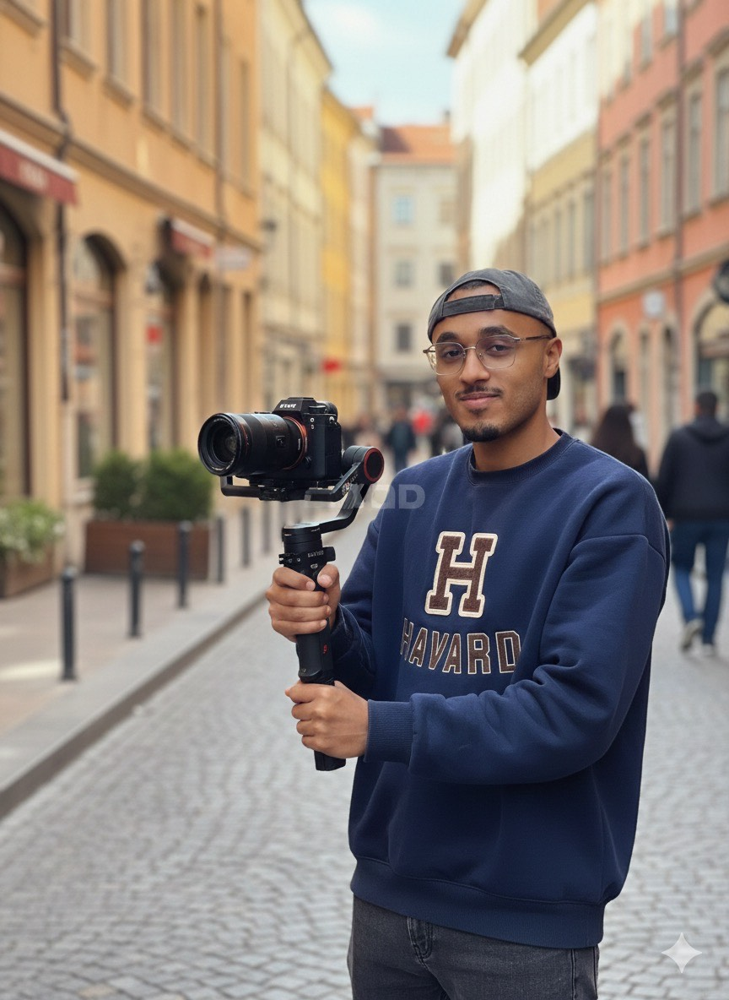

Khoubayb's Eyes
Khoubayb's Eyes capture l’âme des lieux et la beauté des détails. À travers la photographie et la vidéo, je raconte des histoires visuelles inspirées par les restaurants, les villes et les émotions
Voir le portfolio

Khoubayb's Eyes capture l’âme des lieux et la beauté des détails. À travers la photographie et la vidéo, je raconte des histoires visuelles inspirées par les restaurants, les villes et les émotions
Voir le portfolio